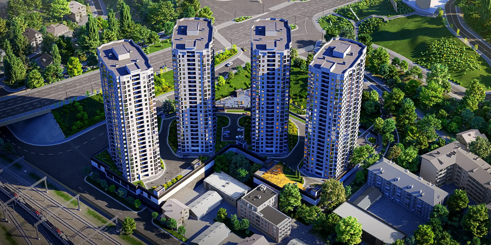
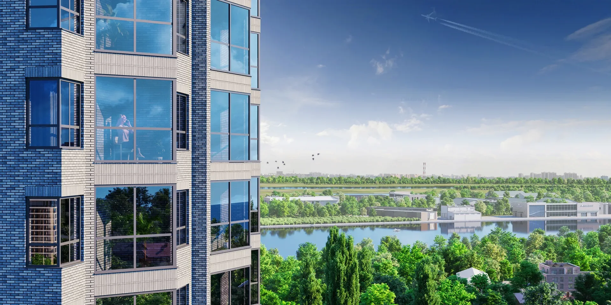

Проверено по официальному источнику
Ростов-на-Дону
РОЯЛ ТАУЭРС
от 3 789 450₽Жилой комплекс бизнес-класса из четырёх высотных домов в Железнодорожном районе. Проект включает закрытый многоуровневый двор, спортивные и детские зоны, торговую инфраструктуру и подземный паркинг.
Цена и наличие не являются публичной офертой. Проверено: 16.07.2026.
- Адрес
- Ростов-на-Дону, ул. Привокзальная, 9
- Застройщик
- ГК «МСК»
- Статус
- Строится; квартиры в продаже
- Срок
- I квартал 2027
- Класс
- бизнес
- Площадь
- 24–72 м²
Официальные материалы
Галерея проекта
Файлы сохранены локально с официального сайта ЖК или застройщика. Изображения агрегаторов не используются.


Проверка данных
Источник и актуальность
Основные сведения сверены с первичным источником. Для цены, конкретного корпуса, срока передачи ключей и доступности квартиры обязательна повторная проверка перед бронированием.
Официальный источникmsk-development.ruОткрыть официальный сайт →Проверено: 16.07.2026
Поможем сравнить проекты
Получить подборкуНужна квартира в новостройке?
Проверим доступность лотов, условия застройщика и документы на дату обращения.